I n Cusco, the Quechua people are at the forefront of the climate struggle. Amid Peru’s sacred mountains and ancestral plateaux, they confront daily challenges, such as parched pastures, melting glaciers, disruptions to agricultural cycles and persistent mining that damages the land.
In this context, survival itself becomes an act of resistance.
The Quechuas’ resistance involves men, women, children, animals and the ecosystem itself, but has never been closer to collapse.
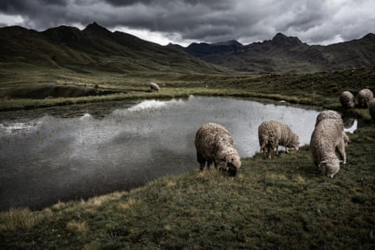Sheep grazing in the Sacred Valley of the Urubamba River, once the heartland of the Incas’ empire
Over the past six decades, glaciers in the Peruvian Andes have lost more than 48% of their surface area, according to data from the national water authority. The Cusco region is no exception.
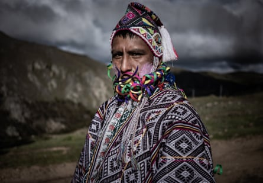A Quechua man in traditional dress during the Compadres festival
The gradual retreat of glaciers has reduced the summer water supply, affecting small potato fields and the pastures where llamas, sheep and alpacas graze. In some areas, the productive capacity of pasture has decreased by up to 30%, making life harder for livestock.
In dealing with this crisis, the public response has been fragmented. Although nationwide climate mitigation programmes exist, such as Perú Limpio (Clean Peru) or the environment ministry’s national adaptation plan , rural communities report poor implementation at the local level, particularly in remote provinces.
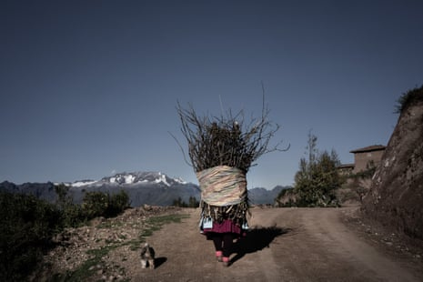Every morning, a woman from the Quechua community of Misminay, near Maras, climbs the slopes with her dog, crossing ancestral lands that have long sustained pastoral life
This has resulted in increased internal migration. A report by IDL-Reporteros, an online newspaper based in Lima, and the aid organisation Care Peru indicates that more than 72,000 families left rural Andean areas between 2018 and 2024 due to drought, agricultural crises and a lack of structural support.
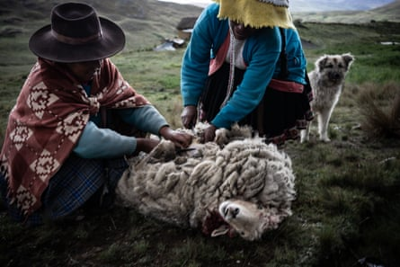In one of the region’s most isolated areas, in a hamlet above the Sacred Valley, two women shear the wool from their dead sheep. As the ecosystem changes, villagers’ sheep are dying more frequently
Against this backdrop, the resilience observed in Quechua villages is everywhere in everyday actions, such as tending endangered livestock, preparing soup with what is to hand, and teaching children to recognise the cycles of the Earth.
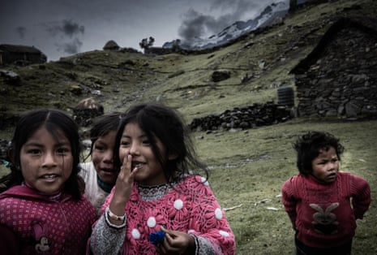Children from the Queros community play near their homes. Due to the melting glaciers, their future is increasingly uncertain
The cult of Pacha Mama , meaning “Mother Earth” in Quechua, dates back to pre-Incan times on the Andean plateau. Spanish chroniclers documented her veneration as early as the 16th century, describing her as a female deity associated with fertility, soil and agricultural cycles.
Today, millions of people in Peru, Bolivia, Ecuador and Chile maintain the ancient traditions.
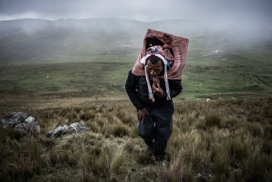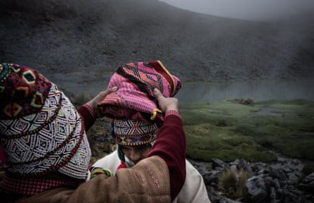Top left: A Quechua shepherd climbs the steep slopes of the Sacred Valley carrying food for his family. Top right: A group of friends gathers during the Compadres festival. Their wings are a gift from Pacha Mama to join her – that’s why they meet on the highest peaks. Above: At the foot of a snow-capped peak, 5,000 metres above sea level, a Quechua father and son perform the ancient ritual of spiritual purification and union with Pacha Mama
For the Quechua people, Pacha Mama is a tangible figure, to whom offerings of coca, maize, seeds and wool are made. She is “the mother of all living creatures”, according to Andean leaders, such as the late Quechua writer Hernán Huarache Mamani.
“We must respect her, know her,” Mamani said.
Quechua spirituality is more than a veneration cult – it is an active, communal form of resistance. It involves summoning all components of the world – air, rain, rocks, animals and people – into harmony, when faith is renewed, and for a moment, fatigue, drought and isolation are suspended.
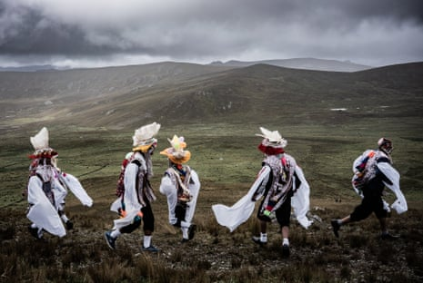A group of men in ritual dress celebrate friendship and the bond with Pacha Mama during the Compadres festival in the Sacred Valley
“In recent years, the glaciers that give us water are receding. The streams that feed the pastures dry up before summer, and the grasses gradually disappear. Animals are drinking less and eating poorly. And we with them,” says a Quechua woman.
“I am afraid for the future of my grandchildren,” she says. “If the water continues to be lacking, they will be forced to leave these mountains or do jobs they don’t know.”
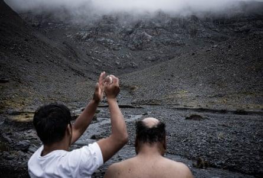At the foot of the highest snow-capped peak in Queros, sacred to all the communities, a father and son perform a ritual of spiritual purification and union with Pacha Mama
This communal struggle drives a resistance more robust than any external pressure could possibly be. It is based, not on institutional structures or top-down funding, but on the bond that unites every living being to its environment.
“I am very attached to this land, to the animals, to the mountains,” says Miguel, from the Queros Quechua community in the Sacred Valley.
“Despite the loneliness and difficulties, I continue grazing and try to pass on the value of this activity to my grandchildren as well, so that one day they too can endure.”
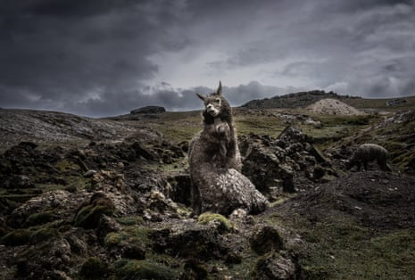Two llamas embrace in the Urubamba valley, embodying the resilience of their species, which is threatened by the rapid transformation of the Andean ecosystem
The Quechua people’s testimonies provide first-hand accounts of daily exposure to the pressures of a predatory system that, despite the climate crisis, continues to expand without enabling anyone to adequately address its consequences.
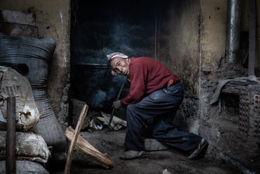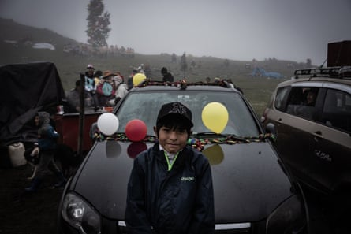Top left: A man from the Chahuaytire community prepares soup for his family. Due to water shortages, the potatoes he uses are becoming increasingly scarce. Top right: Women from the Quechua community of Chahuaytire eat their meal, made up of two varieties of potatoes. Above: A boy attending the Tree Celebration festival in Queros
Indigenous cultures, despite comprising only 6% of the world’s population , are among the most affected by a development model based on extraction, overconsumption and increasing emissions.
Often excluded from environmental policies, these communities face today’s crisis without the necessary tools, recognition or resources. The resistance of the Quechua through grazing, rituals and Pacha Mama worship is the voice of those who have built their existence in balance with the environment and who pay the highest price for the choices of others.
Their model does not place humans at the centre of the world, but as part of a larger, ecological and participatory web where every element is indispensable for life.
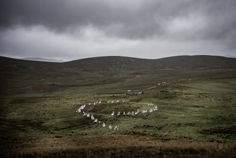During the Compadres festival, groups of figures can be seen dancing in the Sacred Valley